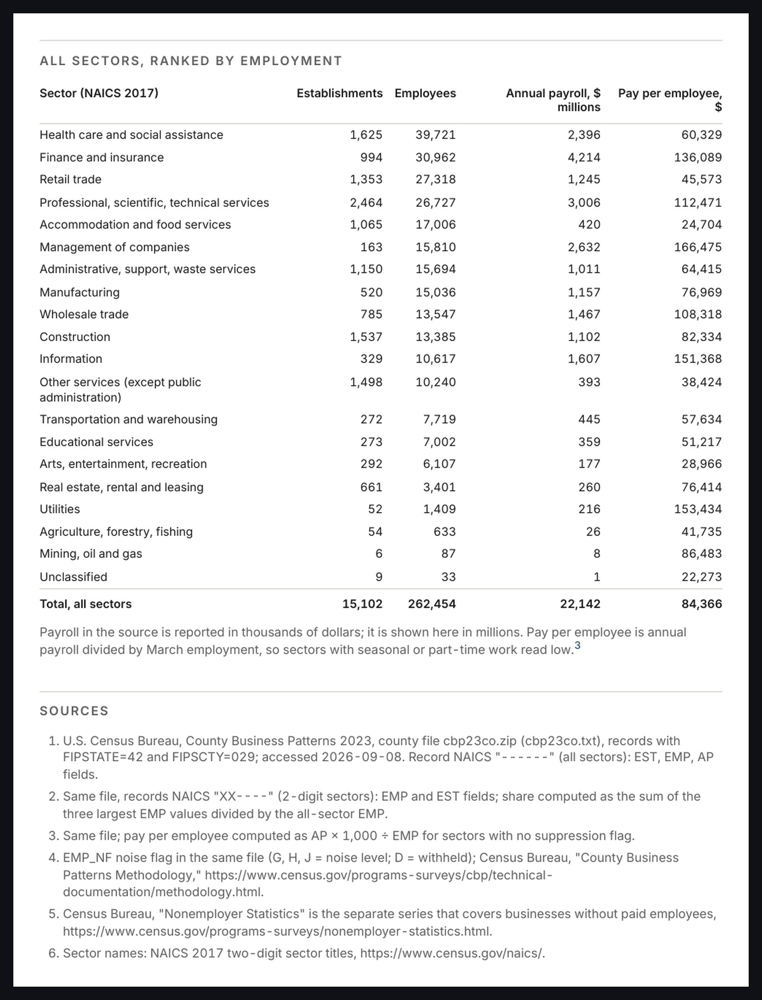
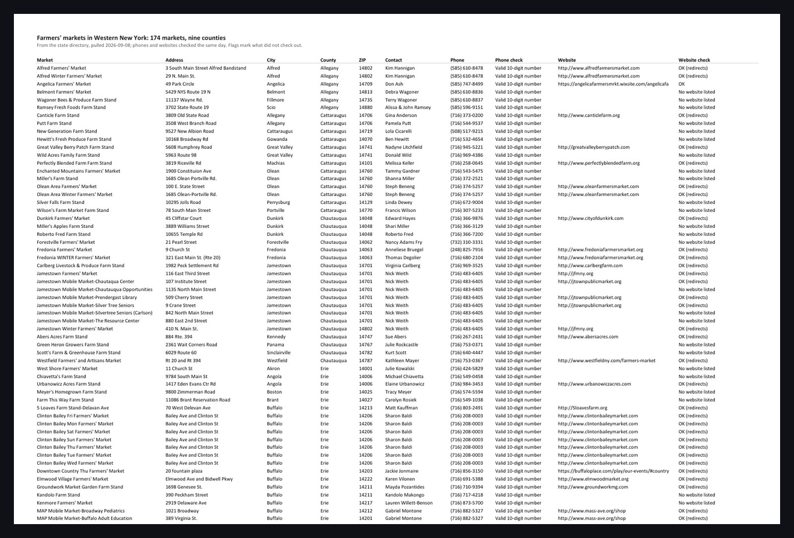
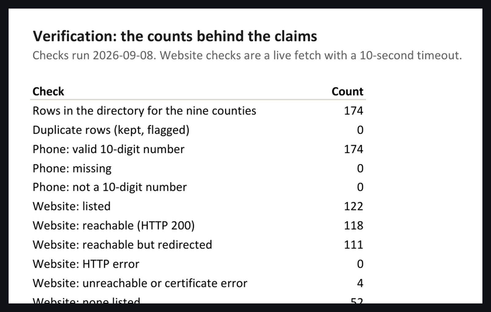

Research · public data · two sample deliverables
Research where every figure carries the file, the filter and the date it was read.
These are two deliverables from public data. The first is a two-page business brief on one county, computed by script from the Census Bureau's County Business Patterns file, with a numbered source on every number. The second is a lead database of every farmers' market in nine Western New York counties, taken from the state's own directory, standardised, with every phone number and website checked live on the day it was built. Neither contains a figure that cannot be reproduced from its source line.
The brief

- The methods section says what the data cannot tell you. The counts are establishments, not firms; the Bureau adds noise to protect confidentiality; the self-employed are not in the file.
- One script builds it from the raw download, so a brief for a different county, or for all sixty-seven in the state, is a parameter change.
- It is typeset to a written standard, with serif text at book measure, a sans-serif for tables and labels, three sizes and one accent.
The lead database


- Nothing was corrected by hand. A dead site or an odd number stays as published and is flagged in words, with colour as support.
- Duplicates by name and address are kept and flagged. The directory had none in these counties, and the sheet says so.
- The contact names are the market managers the state publishes in its directory. I do not scrape social platforms, whose terms forbid it.
- The same script runs against any other state with an open directory. Where there is none, the sourcing is done by hand and each row still gets its citation.
Download the brief, the lead workbook and the same list as CSV. The data is public: U.S. Census Bureau, County Business Patterns 2023, and the New York State Department of Agriculture and Markets directory of farmers' markets.